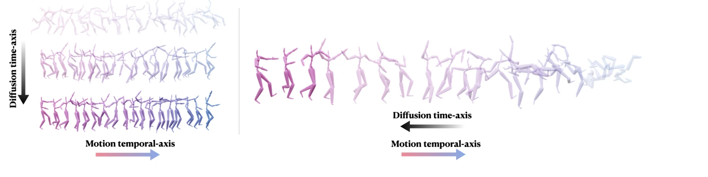
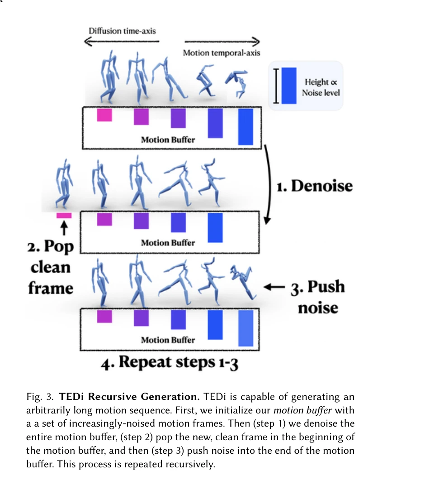
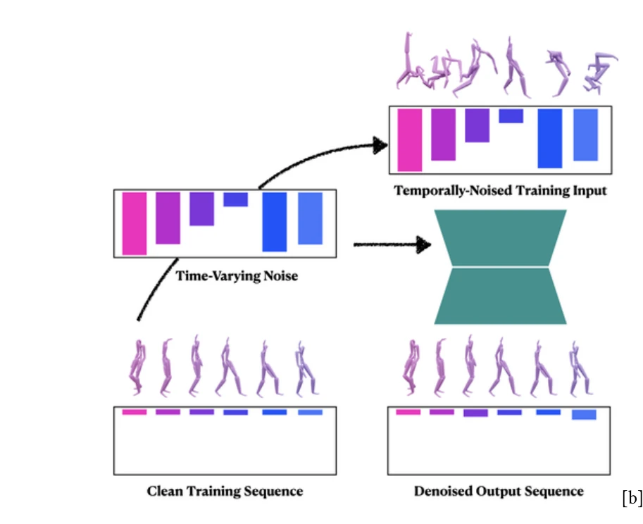

저자: Zihan Zhang, Richard Liu, Kfir Aberman, Rana Hanocka | 날짜: 2023-07-27 | URL: https://arxiv.org/abs/2307.15042

Fig. 1. Inspired by the gradual nature of the diffusion process along a diffusion time-axis (left), our approach (right)
TEDi는 Denoising Diffusion Probabilistic Models (DDPM)의 점진적 생성 개념을 모션 시퀀스의 시간축에 적용하여, 두 축을 얽혀 있게(entangle) 함으로써 임의 길이의 장기 모션 생성을 가능하게 한다. 시간에 따라 변하는 노이즈 레벨을 가진 모션 버퍼를 반복적으로 제거하는 자동회귀 메커니즘을 통해 연속적인 프레임 스트림을 생성한다.

Fig. 3. TEDi Recursive Generation. TEDi is capable of generating an

Fig. 2. TEDi Training. We train our diffusion-based model to remove
총평: TEDi는 diffusion 모델의 시간축과 모션 시퀀스의 시간축을 창의적으로 얽혀 있게 함으로써 장기 모션 생성의 근본적인 문제를 우아하게 해결한 혁신적 작업이다. 임의 길이 생성, stitching 제거, 대화형 제어 등 기존 방법들의 한계를 동시에 극복하며, 명확한 설명과 견고한 기술적 기초로 높은 평가를 받을 만하다.